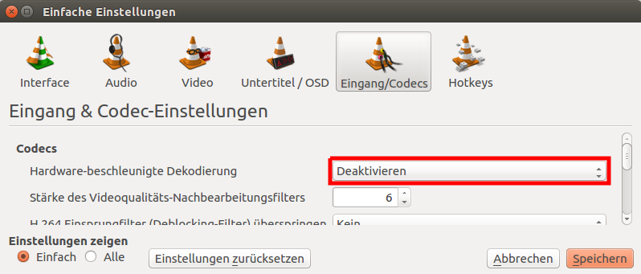

DVD-Wiedergabe
Dieser Artikel wurde für die folgenden Ubuntu-Versionen getestet:
Ubuntu 16.04 Xenial Xerus
Ubuntu 14.04 Trusty Tahr
Zum Verständnis dieses Artikels sind folgende Seiten hilfreich:
Viele VideoPlayer sind in der Lage, DVDs abzuspielen. Im Falle kommerzieller Filme verfügen DVDs über einen zwar unwirksamen Kopierschutz, der sich allerdings als wirksamer Abspielschutz herausstellt. Um auch diese DVDs abspielen zu können, gibt es zwei Möglichkeiten:
Kommerzielle Programme, die den benötigten Schlüssel zur DVD-Wiedergabe mitbringen
Die Bibliothek Libdvdcss, die wegen lizenzrechtlicher Unsicherheiten nicht in Ubuntu enthalten ist (Softwarepatente in den USA, Kanada und einigen anderen Ländern)
Kommerzielle Programme¶
Kommerzielle Programme lösen das Problem, indem die Hersteller einen für die Entschlüsselung zuständigen CSS-Schlüssel von der "DVD Copy Control Association" (CCA) erwerben. Diesen dürfen sie dann an ihre Kunden weiterreichen. Für Linux gibt es zwei kommerzielle Programme:
ONEPLAY DVD Player (ehem. Fluendo DVD Player) und
Hinweis!
Fremdsoftware kann das System gefährden.
Libdvdcss¶
Die Bibliothek kann entweder über ein in den offiziellen Paketquellen enthaltenes Paket installiert oder selbst erstellt werden.
Ab Ubuntu 15.10¶
Benötigt wird das Paket [1]:
libdvd-pkg (multiverse)
 mit apturl
mit apturl
Paketliste zum Kopieren:
sudo apt-get install libdvd-pkg
sudo aptitude install libdvd-pkg
Anschließend wird im Terminal [2] folgender Befehl mit Root-Rechten ausgeführt [3]:
sudo dpkg-reconfigure libdvd-pkg
wodurch der Quellcode von libdvdcss2 heruntergeladen, kompiliert, in ein DEB-Paket umgewandelt und zum Schluss installiert wird. Wer das Paket aufheben möchte, um es beispielsweise auf andere Rechner zu übertragen, findet dieses im Ordner /usr/src/libdvd-pkg/. Danach muss der Rechner gegebenenfalls neu gestartet werden.
Bis Ubuntu 15.04¶
Benötigt wird das Paket:
libdvdread4 (universe)
mit apturl
Paketliste zum Kopieren:
sudo apt-get install libdvdread4
sudo aptitude install libdvdread4
Anschließend wird im Terminal die Datei /usr/share/doc/libdvdread4/install-css.sh mit Root-Rechten ausgeführt:
sudo sh /usr/share/doc/libdvdread4/install-css.sh
wodurch libdvdcss2 als Paket heruntergeladen und installiert wird.
Paket selbst erstellen¶
Die eigentliche Bibliothek libdvdcss kann mit einfachen Mitteln unter Ubuntu 14.04 auch selbst kompiliert [4] und installiert werden. Der Quellcode ist bereits entsprechend vorbereitet und es werden nur folgende Pakete vorausgesetzt:
dh-make
debhelper
autotools-dev
mit apturl
Paketliste zum Kopieren:
sudo apt-get install dh-make debhelper autotools-dev
sudo aptitude install dh-make debhelper autotools-dev
In einem Terminal wird die Version (Überblick über verfügbare Versionen  ) festgelegt:
) festgelegt:
version=1.4.0
Um das Paket in einem temporären Verzeichnis zu bauen, dienen folgende Befehle:
tmp=$(mktemp -d)
cd ${tmp}
wget http://download.videolan.org/libdvdcss/${version}/libdvdcss-${version}.tar.bz2
tar xvjf libdvdcss-${version}.tar.bz2
cd libdvdcss-${version}
./configure --prefix=/usr/local
dh_make -s -y -f ../libdvdcss-${version}.tar.bz2 --packagename libdvdcss2
fakeroot debian/rules binary Nun kann das Paket installiert werden:
sudo dpkg -i ../libdvdcss2_${version}-1_$(dpkg-architecture -qDEB_HOST_ARCH).deb Wer das Paket im Homeverzeichnis aufheben möchte, kann das mit folgendem Befehl machen:
mv ../libdvdcss2_${version}-1_$(dpkg-architecture -qDEB_HOST_ARCH).deb ~/ Das benutzte Verzeichnis /tmp/... wird spätestens bei der nächsten automatischen Systembereinigung aufgeräumt.
Problembehebung¶
Ubuntu 16.04: Darstellungsfehler auf AMD-Grafikkarten¶
Bei Ubuntu 16.04 kann es zu Fehlern in der Darstellung von DVD's oder ISO-Images von DVD's kommen. Ursache scheint ein ein Fehler in der libvdpau bei Verwendung der Treibers "radeon" zu sein.
Umgehen kann man das Darstellungsproblem, indem im entsprechenden Programm die Hardwarebeschleunigung deaktiviert wird. Für VLC geht man dabei wie folgt vor: im Menü "Werkzeuge -> Einstellungen -> Eingang/Codecs" 
Keine Wiedergabe von DVDs¶
Mit dem Programm regionset lässt sich die im Laufwerk eingestellte Region auslesen und gegebenenfalls ändern. Manche Laufwerke haben von Werk aus keine Region eingestellt, dies kann (!) dazu führen, dass sich überhaupt keine verschlüsselten DVDs abspielen lassen; auch hier ist mit regionset eine Region einzustellen. Üblicherweise ist dies für Deutschland die Region 2. Es sollte jedoch beachtet werden, dass die meisten Laufwerke ein Ändern der Region nur insgesamt fünf Mal zulassen.
Ruckelige Wiedergabe¶
Falls DVD-Programme aufgerufen wurden, bevor libdvdcss richtig installiert war, könnte das Ruckeln an falschen CSS-Schlüsseln liegen. In diesem Fall braucht nur das versteckte Verzeichnis ~/.dvdcss/ gelöscht zu werden.

 Übersichtsartikel
Übersichtsartikel- Erstellt mit Inyoka
-
 2004 – 2017 ubuntuusers.de • Einige Rechte vorbehalten
2004 – 2017 ubuntuusers.de • Einige Rechte vorbehalten
Lizenz • Kontakt • Datenschutz • Impressum • Serverstatus -
Serverhousing gespendet von